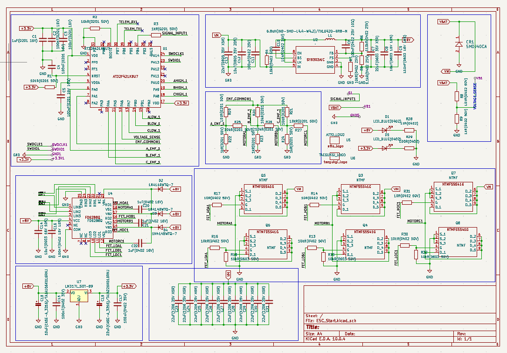
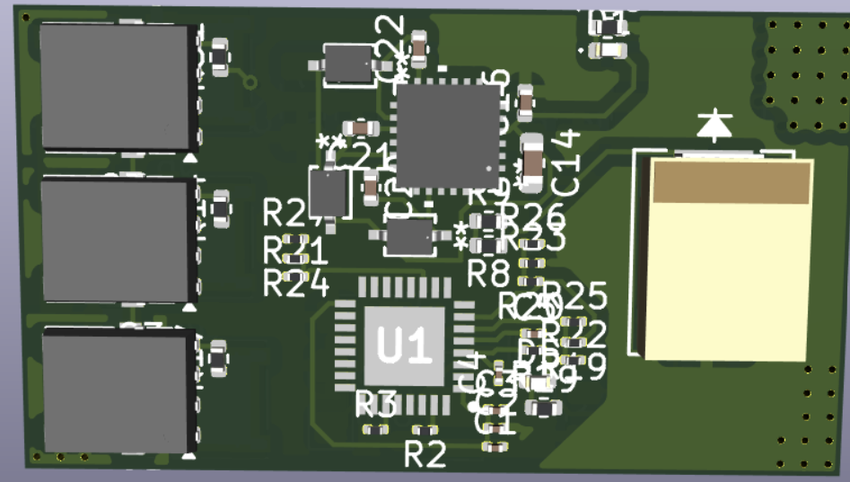
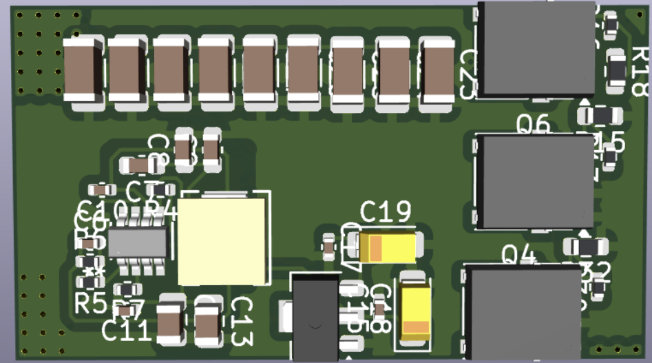

경험 및 프로젝트 사항
드론용 ESC(전자변속기) H/W 설계 및 펌웨어 포팅
KiCad를 활용한 하드웨어 설계 및 펌웨어 제어 실무 과정 수료
- 회로 설계: KiCad를 활용하여 모터 제어 및 전원부 회로도(Schematic) 작성
- PCB 아트웍: 부품 배치 및 라우팅을 포함한 PCB Artwork 설계 수행
- 펌웨어: 설계한 보드에 맞춘 펌웨어 포팅 및 동작 검증 완료



AI 웹 애플리케이션 기획 및 개발
자동차 부품, 전장, 미래차 기초과정
하드웨어 결선, 모터 제어 및 회로 설계 심화 학습
- BMS 및 전원 설계: 3S 18650 배터리 팩 구성, 다중 셀 전압 감시(B+/B1/B2/B-) 및 퓨즈 보호 회로 결선
- BLDC 모터 제어: SimpleFOC Shield(v3.2) 및 Arduino UNO를 활용한 3상 모터 구동 시스템 구축
- 피드백 및 펌웨어 제어: AS5600 자기 인코더를 이용한 회전자 위치 피드백(FOC) 제어 및 가상 MCU 시뮬레이터 환경을 활용한 임베디드 C 프로그래밍(PWM 제어, 실시간 레지스터 디버깅) 수행
반도체소부장컨소시엄 연구과제 학생연구원 및 스터디
반도체 소재 기반 가스센서용 저전력 전원회로 설계 과제 참여[cite: 302, 304]
- 회로 설계 스터디: 학부 연구 과정의 일환으로 주간 PSpice 세미나에 학생 연구원으로 성실히 참석하여, 회로 시뮬레이션 활용법 및 기초 전원 회로 설계 역량을 함양함[cite: 302, 304].
졸업 작품 (Capstone Design)
AI 기반 야생동물 탐지 및 추적 레이저 터렛 상세 보기
YOLOv8 모델을 활용한 야생동물 객체 실시간 인식 기능 구현. Raspberry Pi와 Arduino 간의 시리얼 통신을 구축하고, PID 제어 알고리즘을 적용한 팬틸트 모터를 통해 동물을 정밀하게 추적하는 레이저 트래킹 시스템 개발.